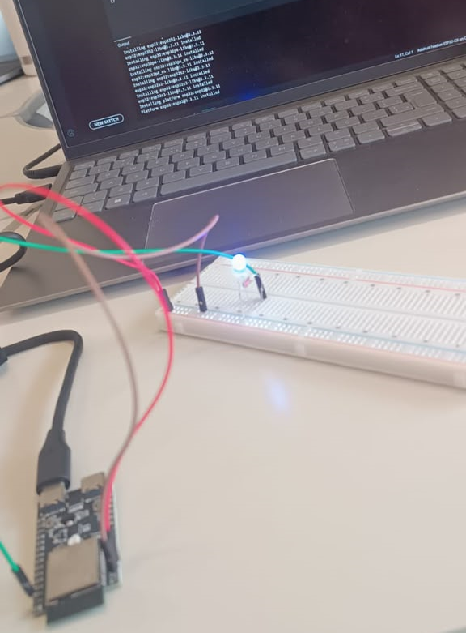
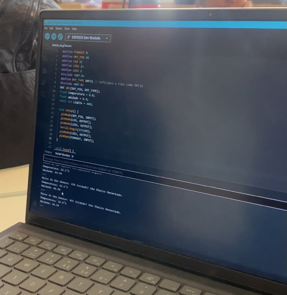
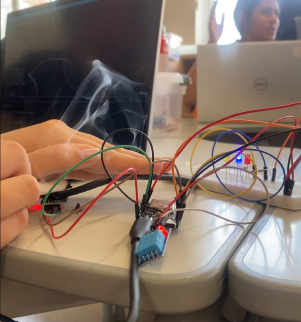

SOBRE NÓS


Nosso objetivo é fornecer informações sobre nossa estação meteorológica, permitindo que os usuários acompanhem as condições de temperatura, gás e umidade em tempo real.
A estação meteorológica é composta por um circuito IoT que conta com sensores que coletam dados de temperatura, umidade e gás CO2 do ambiente. Esses dados são processados por um microcontrolador ESP32 que os transmitem para um servidor web, onde são exibidos em tempo real para os usuários.
O código-fonte do projeto está disponível no nosso repositório do GitHub. Sinta-se à vontade para contribuir e sugerir melhorias!

Arduino IDE

Mosquitto

Visual Studio Code

Figma

ESP32

Sensor DHT11

Sensor MQ-135

LEDS

Aula 1- Uso de LEDS

Programação da estação meteorológica

Circuito da estação meteorológica